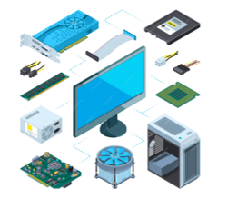

ระบบคอมพิวเตอร์
ระบบคอมพิวเตอร์ หมายถึง การทำงานรของคอมพิวเตอร์ส่วนต่างๆ ทำงานร่วมกัน เพื่อให้บรรลุเป้าหมายอย่างเป็นระบบ และมีประสิทธิภาพ ระบบคอมพิวเตอร์ ประกอบด้วย ฮาร์ดแวร์(Hardware) ซอฟต์แวร์(software) บุคลากร(Peopleware) ข้อมูลและสารสนเทศ(Data and Information)
องค์ประกอบของระบบคอมพิวเตอร์
ระบบคอมพิวเตอร์จะประกอบด้วยองค์ประกอบสำคัญ 5 ส่วน ดังนี้

1. ฮาร์ดแวร์ (Hardware) คือส่วนอุปกรณ์คอมพิวเตอร์ ที่ประกอบขึ้นแล้วสามารถจับต้องได้ ตัวอย่างเช่น เครื่องคอมพิวเตอร์ (Computer) ปรินเตอร์ (Printer) เมาส์(mouse) โดยฮาร์ดแวร์สามารถแบ่งออกเป็น 4 ส่วน ตามประเภทการใช้งานได้ ดังนี้
1.1 หน่วยรับข้อมูล (Input Unit) ทำหน้าที่รับโปรแกรมคำสั่ง และข้อมูลเข้าสู่เครื่องคอมพิวเตอร์
1.2. หน่วยประมวลผลกลาง (Central Processing Unit - CPU) ทำหน้าที่เกี่ยวกับการคำนวณทั้งทางตรรกะและคณิตศาสตร์ รวมทั้งการประมวลข้อมูลตามคำสั่งที่ได้รับ
1.3 หน่วยความจำ (Memory Unit) ทำหน้าที่เก็บข้อมูลหรือคำสั่งที่ส่งมาจากหน่วยรับข้อมูล เพื่อเตรียมส่งไปประมวลผลยังหน่วยประมวลผลกลาง และเก็บผลลัพธ์ที่ได้มาจากการประมวลผลแล้วเพื่อเตรียมส่งไปยังหน่วยแสดงผล
1.4 หน่วยแสดงผล (Output Unit) ทำหน้าที่แสดงผลข้อมูลที่คอมพิวเตอร์ทำการประมวลผล หรือผ่านการคำนวณแล้ว
2. ซอฟต์แวร์ (sofware) คือ ส่วนประกอบโปรแกรมที่เป็นคำสั่งในการควบคุมการทำงานของเครื่องคอมพิวเตอร์ให้สามารถทำงานตามลำดับขั้นตอน ซึ่งแบ่งได้เป็น 2 ประเภท ดังนี้
2.1 ซอฟต์แวร์ระบบ (System Software) คือโปรแกรมที่บริษัทผู้ผลิตสร้างขึ้นเพื่อใช้ในการควบคุมการทำงานของเครื่องคอมพิวเตอร์ให้ทำงานประสานกัน และควบคุมลำดับขั้นตอนการทำงานของอุปกรณ์ต่างๆ ในระบบคอมพิวเตอร์ โดยซอฟต์แวร์ระบบสามารถแบ่งออกได้ ดังนี้
ระบบปฏิบัติการ (Operating System: OS) คือ โปรแกรมที่คอยควบคุมการประสานงานระหว่างซอฟต์แวร์กับอุปกรณ์คอมพิวเตอร์ต่างๆ โดยระบบปฏิบัติการที่ได้รับความนิยมในสมัยนี้ ได้แก่ ระบบปฏิบัติการดอส ระบบปฏิบัติการวินโดว์ ระบบปฏิบัติการแมคอินทอช ระบบปฏิบัติการลีนุกซ์ และระบบปฏิบัติการแอนดรอยด์